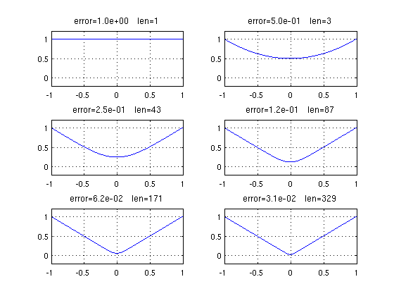
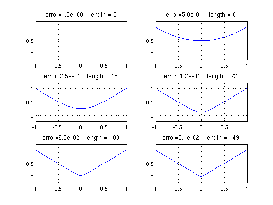
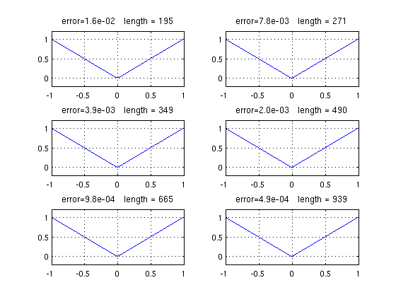
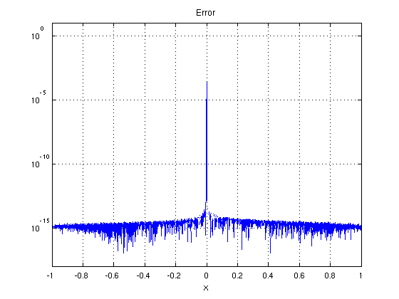

Absolute value approximations by rationals
Nick Trefethen, May 2011
(Chebfun example approx/AbsoluteValue.m)
Peter Lax mentioned to me recently an example that no doubt various people have thought about over the years. Suppose we think of x^2 as a given number and we try to find its square root by solving the equation
r^2 = x^2
for r using Newton's method beginning from the guess r=1. The successive iterates are given by the formula
r := (r^2+x^2)/2r .
After k steps we have a rational function of type (2^k,2^k), and these functions will approach the function abs(x).
Let's see the iteration in action:
x = chebfun('x'); r = chebfun('1'); LW = 'linewidth'; lw = 1.6; FS = 'fontsize'; fs = 12; for k = 0:5 subplot(3,2,k+1) plot(r,LW,lw), axis([-1 1 -.2 1.2]), grid on err = norm(r-abs(x),inf); s = sprintf('error=%4.1e len=%d',err,length(r)); title(s,FS,fs) r = (r.^2+x.^2)./(2*r); end
The curves look nice, but the exponentially growing chebfun lengths do not. To improve this, we can put a breakpoint at x=0:
x = chebfun('x',[-1 0 1]); r = chebfun('1',[-1 0 1]); for k = 0:5 subplot(3,2,k+1) plot(r,LW,lw), axis([-1 1 -.2 1.2]), grid on err = norm(r-abs(x),inf); s = sprintf('error=%4.1e length = %d',err,length(r)); title(s,FS,fs) r = (r.^2+x.^2)./(2*r); end
It's interesting to look at the error. In the outer half of the interval, we've already achieved machine precision, whereas near x=0 the errors remain large.
clf, semilogy(abs(r-abs(x)),LW,lw) axis([-1 1 1e-18 10]), grid on xlabel('x',FS,fs) title('Error',FS,fs)
Warning: Negative data ignored

Let's take six more steps of the iteration:
for k = 0:5 subplot(3,2,k+1) plot(r,LW,lw), axis([-1 1 -.2 1.2]), grid on err = norm(r-abs(x),inf); s = sprintf('error=%4.1e length = %d',err,length(r)); title(s,FS,fs) r = (r.^2+x.^2)./(2*r); end
Here is the error:
clf, semilogy(abs(r-abs(x)),LW,lw) axis([-1 1 1e-18 10]), grid on xlabel('x',FS,fs) title('Error',FS,fs)
Warning: Negative data ignored
Evidently we are getting convergence to abs(x), for all x. In the infinity norm, the rate looks pretty disappointing. Donald Newman showed that the optimal type (n,n) rational approximants to abs(x) achieve accuracy O(exp(-C*sqrt(n))) [1,2], whereas here the maximum error is exactly 2^(-k) after k steps, which corresponds to 1/n for the type (n,n) approximation. Away from x=0, however, the accuracy is O(exp(-C*n)), thanks to the quadratic convergence of Newton's method.
Incidentally, note that this last curve is not very close to symmetrical about x=0. I wonder why not?
References:
[1] D. J. Newman, Rational approximation of abs(x), Michigan Mathematical Journal 11 (1964), 11-14.
[2] L. N. Trefethen, Approximation Theory and Approximation Practice, draft book available at http://www.maths.ox.ac.uk/chebfun/ATAP/.